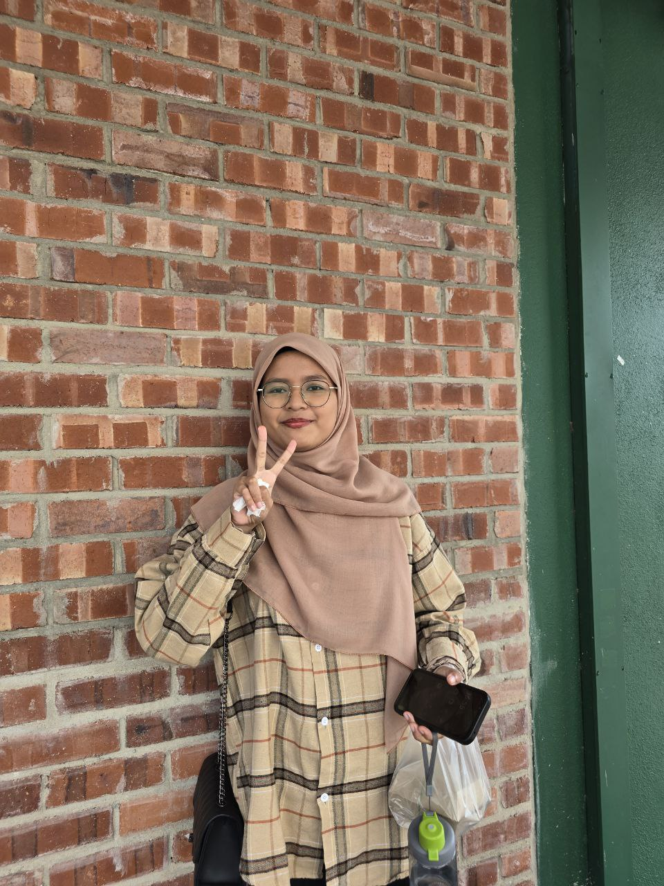

About Me
I would like to introduce myself and tell you a little bit about my life. My name is Nurul Amanina Binti Mohamad Radzi. I was born on July 28, 2004 at Hospital Bersalin Pulau Pinang, which means I'm 20 years old this year.
I'm an introvert person. I really nervous when I need to talk in front of people.Now, I'm trying to overcome it. This blog was made to completing my IMD318 individual assignment.